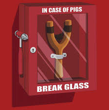

Ultime news
- 01/04/2017: Angry Birds Stretch! atteso per Dicembre 2019
- 08/10/2019: Annunciato il progetto di tecnologie web
L'inizio di una guerra epica
La storia di Angry Birds nasce da molto lontano.. Nel lontano 2009 nella fredda Finlandia grazie alla azienda Rovio Mobile.
La storia e le curiosità di un fenomeno mondiale...
